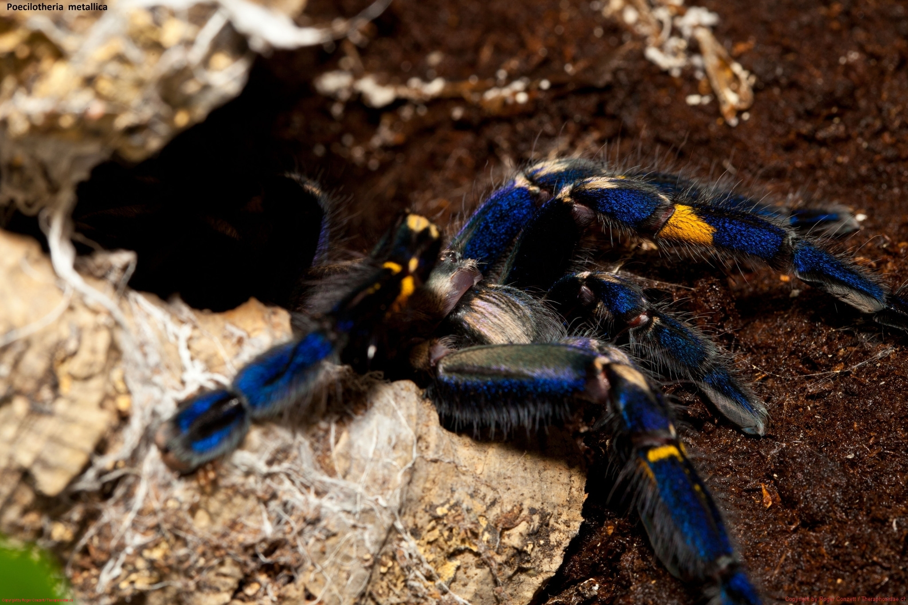
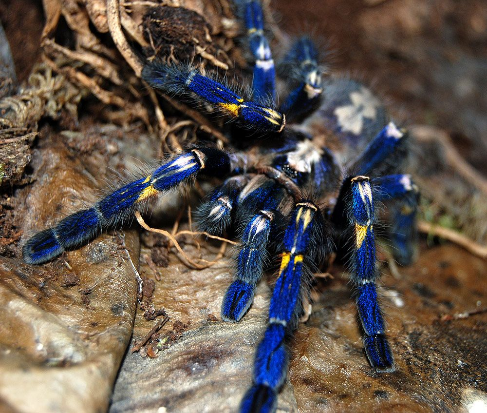
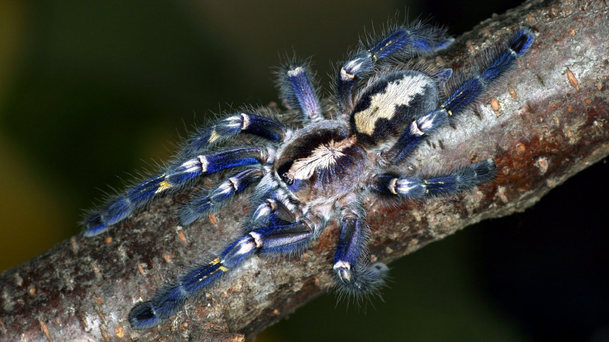
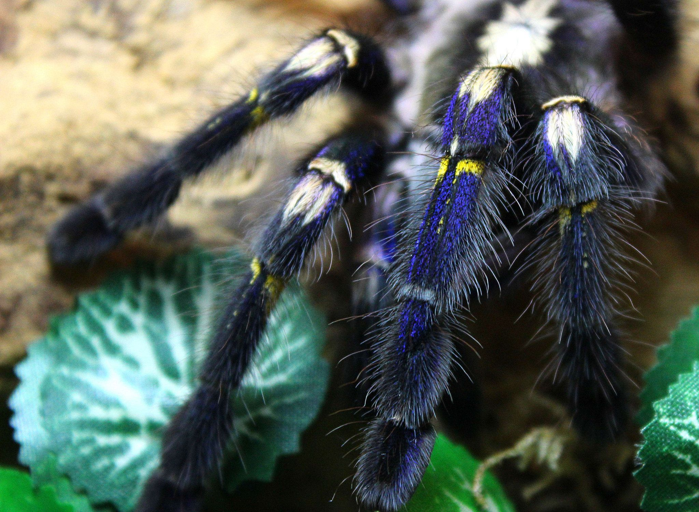
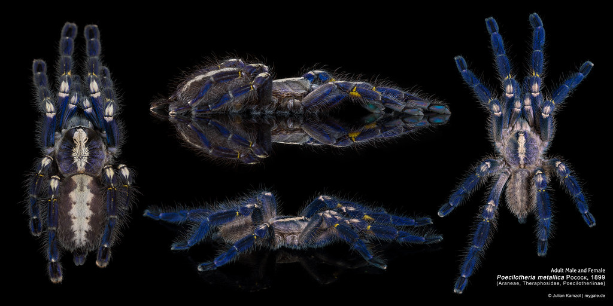
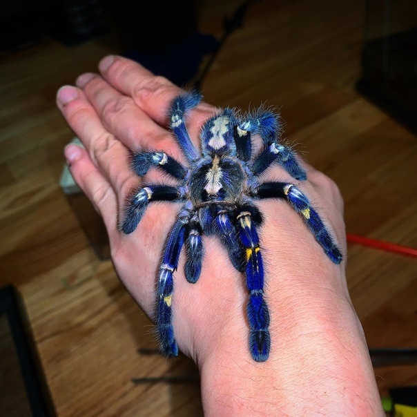
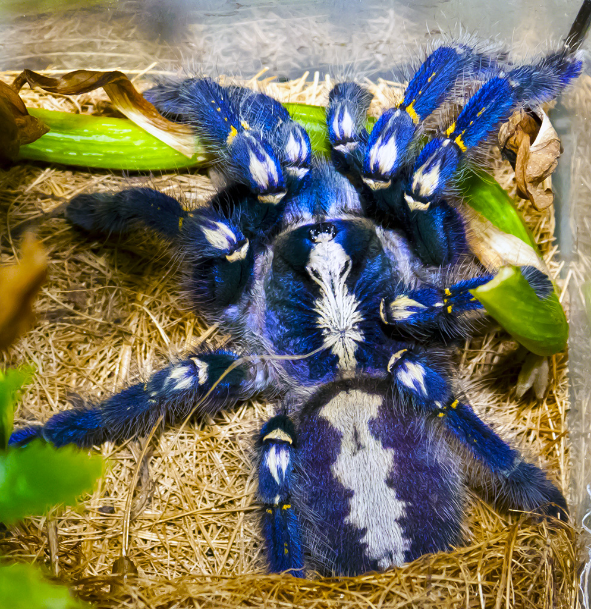
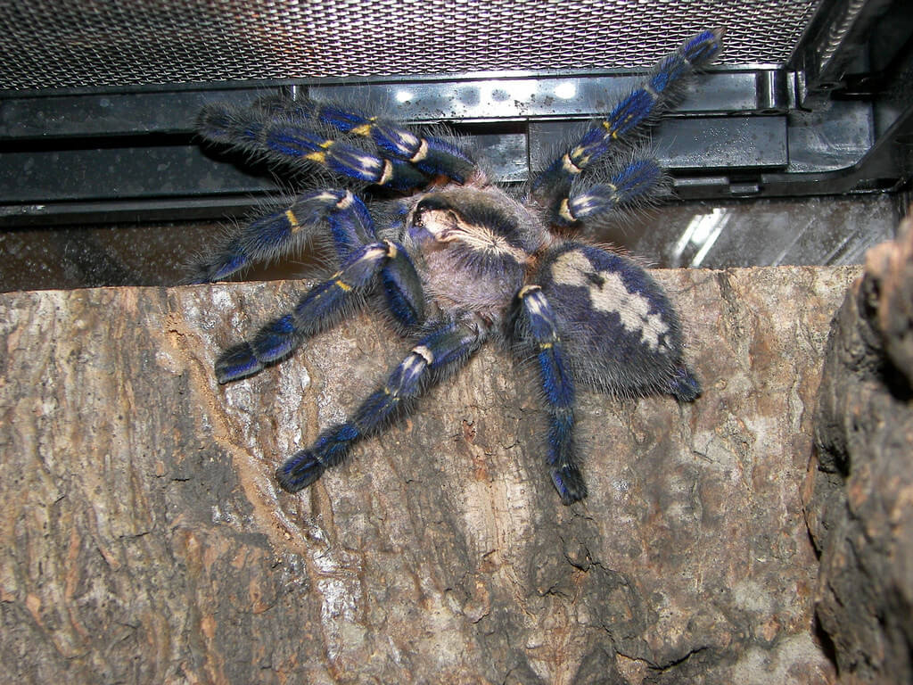

Металлический древесный птицеед, или пецилотерия металлика (лат. Poecilotheria metallica) – один из самых импозантных представителей семейства Пауков-птицеедов (Theraphosidae).
Он хорошо переносит содержание в неволе и пользуется из-за своей яркой внешности большой популярностью среди любителей экзотических животных.
В США взрослая самка может стоить до $500. Столь высокая цена объясняется редкостью вида и сложностью его размножения в домашних условиях.
Браться за выращивание такого питомца начинающим любителям не рекомендуется. Его яд очень сильный и вызывает в месте укуса нестерпимую боль, продолжающуюся от недели до месяца. У пострадавших нарушается работа сердечно-сосудистой системы, учащается пульс, появляется потливость, головокружение, мышечные судороги и опухоли.
Официально летальных исходов пока зарегистрировано не было.
Распространение
Металлический древесный птицеед встречается только на территории штата Андхра-Прадеш в Индии в окрестностях городов Нандьял и Гиддалуру. Общая площадь занимаемого им ареала не превышает 100 квадратных километров.
Впервые животное было обнаружено в бунгало инженера-железнодорожника северо-западной линии Мадрасской железной дороги в городе Гути, расположенного в сотне миль от мест своего обитания. Предположительно оно попало туда после путешествия в поезде. В дальнейшем его больше никогда не находили в этой местности.
Пойманный экземпляр был описан 1899 в году британским арахнологом Реджинальдом Поукоком. Долгое время вид считался вымершим, пока через 102 лет его вновь не нашел в джунглях канадский зоолог Рик Вест и британский натуралист Эндрю Смит. Местное население его называет голубым или синим пауком.
Пецилотерия металлика входит в список 100 самых угрожаемых видов мировой флоры и фауны.
Поведение
Синие пауки населяют сухие тропические леса Юго-Восточной Индии, расположенных на высотах от 500 до 1000 м над уровнем моря. В ареале их обитания наблюдаются резкие изменения климатических условий. Во время муссонов здесь царит умеренная температура около 25°С и высокая влажность, в остальные поры года сухость и жара. Перед ними воздух нередко прогревается до 50°С.
Пауки ведут одиночный образ жизни. Они живут на высоких старых деревьях листопадных пород и прячутся днем в дуплах и трещинах древесной коры, сооружая воздушные гнезда из липкой паутины. Плотность популяции очень низкая. Паукообразных находят обычно на расстоянии более 50 м друг от друга. Охотятся они исключительно ночью.
Их рацион состоит из различных насекомых, мелких рептилий и лягушек, живущих на деревьях вблизи их укрытия. На поверхность почвы синий паук спускается крайне редко, в основном только в раннем возрасте.
Среди представителей данного вида распространен каннибализм, поэтому они стараются находиться со своими соплеменниками на почтительном расстоянии.
В момент опасности они стараются скрыться бегством. Бегают мохнатые красавцы весьма резво. Если пути к отступлению отрезаны, то беглецы сами кидаются на обидчика и безжалостно кусают его. Иногда они наносят «сухие укусы» без впрыскивания яда.
Размножение
Половозрелые древесные птицееды линяют в июне, когда начинается юго-западный муссон. На континент с Индийского океана приходят влажные воздушные массы, приносящие с собой сезон дождей, длящийся по сентябрь.
После окончания линьки синие пауки приступают к размножению. В отличие от многих других паукообразных спаривания у них проходят сравнительно мирно. В большинстве случаев самки не проявляют агрессии по отношению к самцам.
Спустя 2-3 месяца после оплодотворения самка плетет кокон, в который откладывает от 100 до 150 яиц. Откладывание обычно происходит по завершению сезона дождей. В феврале вылупляются личинки. Они демонстрируют явные каннибальские наклонности и поедают своих более слабых собратьев.
В апреле и мае перед началом муссона личинки превращаются в нимф и до начала июля остаются под опекой матери.
К этому моменту они уже могут позаботиться о себе сами, поэтому разбегаются в разные стороны. Паучки спускаются на землю и сооружают норки в опалой листве, где прячутся при малейшей опасности. Окрепнув, они перебираются на деревья. Обилие пищи в летний период способствует их быстрому развитию.
Содержание в неволе
На одного взрослого синего паука необходим просторный вертикальный террариум с минимальным объемом 30х30х40 см. Ему должна быть предоставлена возможность лазать по деревянным приспособлениям и беспроблемно прятаться в укрытия. Этот домашний питомец отличается пугливым характером, поэтому террариум следует устанавливать в тихом месте.
Днем температура поддерживается на уровне 27°-29°С, а ночью понижается до 26°-25°С.
Для поддержания влажности около 75-80% рекомендуется ежедневно опрыскивать стенки террариума теплой водой из пульверизатора. Обязательно установление поилки и наличие хорошей вентиляции.
Питьевую воду нужно менять каждый день. Также надо ежедневно удалять несъеденный корм. Чистку террариума производят теплой водой. Применение моющих средств опасно для здоровья вашего любимца.
На дно кладут землю для цветочных растений, гумус, торф или кокосовый субстрат толщиной 5-6 см. Во избежание инфекционных заболеваний их надо обновлять не реже одного раза в квартал.
Взрослых животных кормят 1-2 раза в неделю, а молодь в два раза чаще. В неволе пецилотерия металлика хорошо поедает:
Описание
Средняя длина взрослых особей около 52 мм. Головогрудь имеет примерно 23 мм в длину и 20 мм в ширину. Длина конечностей достигает 37-68 мм.
Основной фон окраса коричневый, серый или черноватый, но при ярком освещении приобретает сильный голубой или синий оттенок с блеском металла, который наиболее интенсивен сразу после линьки. У старых животных незадолго перед линькой он остается только на ногах. Молодь обычно окрашена в серый или черный цвет без голубого оттенка.
На верхней стороне опистомы имеется белое или желтоватое пятно в форме листка, от которого отходят узоры, напоминающие тигриную или пчелиную окраску. Посредине проходит темная линия, у пожилых самок она прерывистая. Нижняя часть опистомы шоколадно-коричневая. На спинном щите имеется пятно в виде скрипки с темными или черными краями.
Ноги и педипальцы темнее других частей тела. На голенях (tibia) заметны желто-оранжевые пятнышки.
Продолжительность жизни самцов металлических древесных птицеедов не превышает 4 лет. Самки доживают до 10-15 лет.
